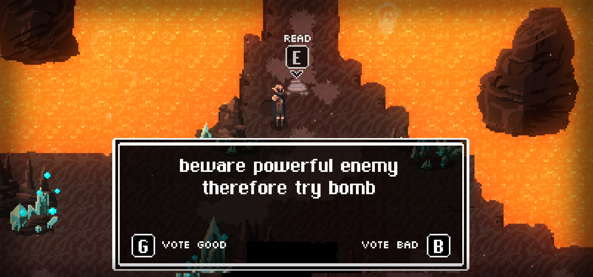
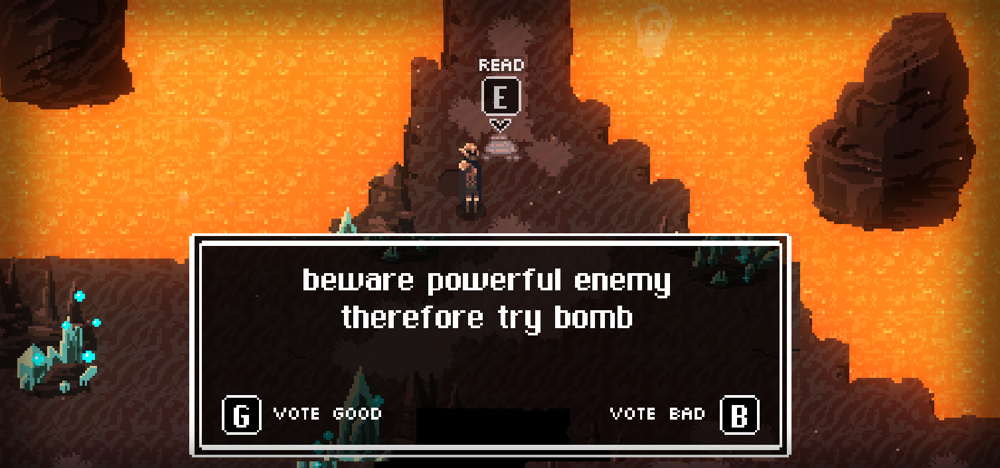
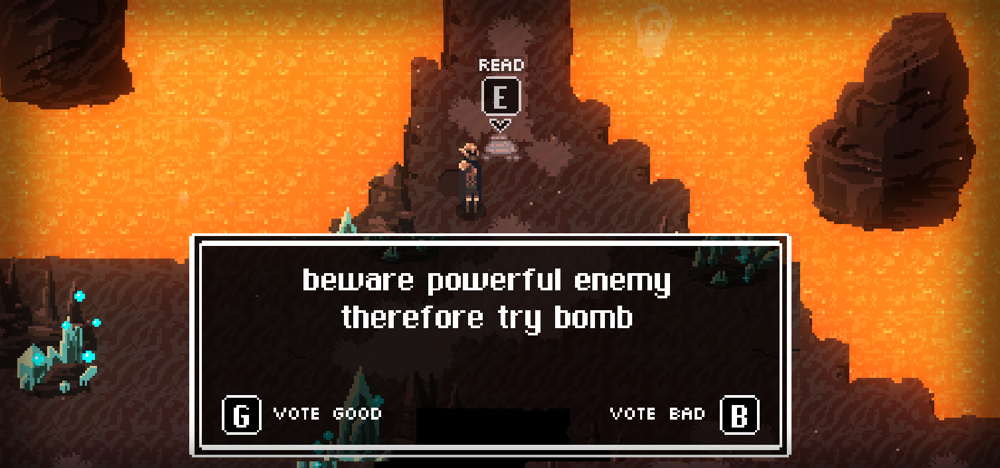

The Fountain of Youth was hidden away. Nonetheless, it is fated that a Usurper will slay the Ageless and unearth it once more.
Lytria is an action-RPG about fighting your way through a maze-like interconnected world. You'll take the role of a hooded stranger, recently imprisoned by a tyrannical regime. Will you escape and uncover the mysteries of this war-torn empire?
Master the art of tight, high-skilled combat to defeat punishing bosses. These battles are not just a test of your skill but also of your strategy. Every encounter will push you to adapt and overcome the odds.
Discover hidden abilities, tools, and relics that will aid you not only in combat but also in exploring the sprawling labyrinthine world. Traverse dangerous terrain, solve intricate puzzles, and open paths to new areas.
The world of Lytria is alive with strange characters—some hostile, some friendly, and all unique. Each encounter brings a new story, a new challenge, and a new mystery to unravel. Will you trust them, or will you forge your path alone?
Secrets are everywhere. Hidden paths, powerful relics, and forgotten lore are waiting to be discovered. Your journey will reward curiosity and perseverance, offering hours of gameplay filled with intrigue and adventure.
Key Features:
- Master tight, high-skilled combat and defeat punishing bosses.
- Discover new abilities and tools to help you traverse the world and defend yourself.
- Meet strange characters, each with unique backstories and motivations.
- Explore a maze-like interconnected world filled with secrets and surprises.
- Hours of engaging gameplay await, with challenging bosses and diverse locations to explore.
- Full controller support for Xbox and PlayStation controllers for an immersive experience.
Lytria is more than just a game. It is a journey through a rich, mysterious world filled with danger and wonder. Will you rise to the challenge, uncover its secrets, and forge your destiny?
